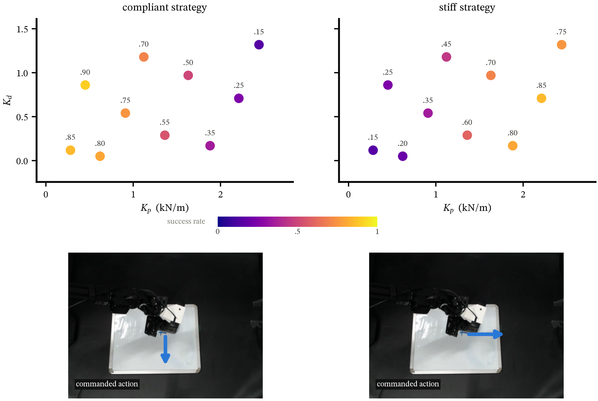
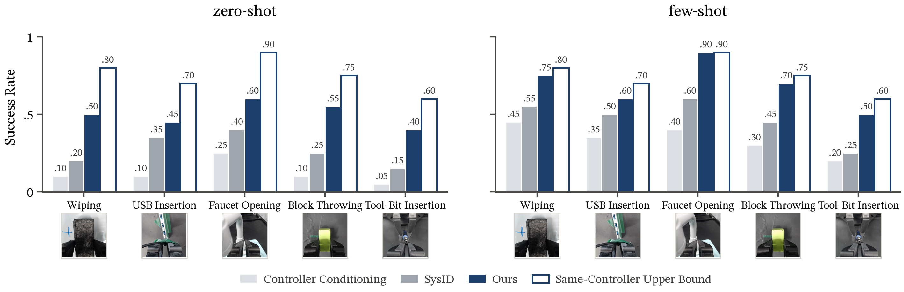
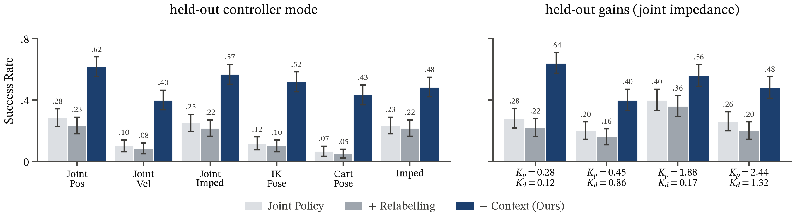
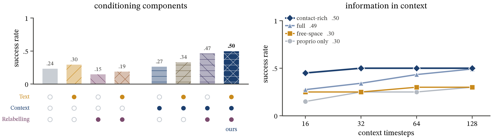
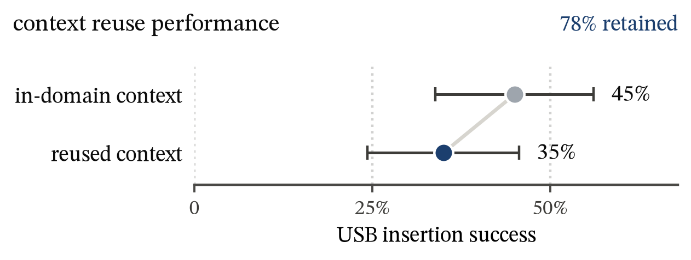

<meta charset="utf-8">
<title>Cross-Controller Transfer</title>
<meta name="description" content="A generalist robot policy that adapts its manipulation strategy to unseen controllers by conditioning on interaction history.">
<link rel="preconnect" href="https://fonts.googleapis.com">
<link rel="preconnect" href="https://fonts.gstatic.com" crossorigin>
<link rel="stylesheet" href="https://fonts.googleapis.com/css2?family=Newsreader:ital,opsz,wght@0,6..72,400;0,6..72,500;0,6..72,600;1,6..72,400;1,6..72,500&family=IBM+Plex+Mono:wght@400;500&display=swap">
<style>
  :root {
    --ground: #fbfbfa;
    --ink: #17202d;
    --muted: #5a6371;
    --rule: #e2e4e8;
    --compliant: #1f3d6b;
    --stiff: #c4561b;
    --plate: #ffffff;
    --code-bg: #f1f2f4;
    --serif: "Newsreader", "Iowan Old Style", "Palatino Linotype", Georgia, serif;
    --mono: "IBM Plex Mono", ui-monospace, "SF Mono", Menlo, monospace;
    --measure: 40rem;
    --wide: 68rem;
  }
  @media (prefers-color-scheme: dark) {
    :root:not([data-theme="light"]) {
      color-scheme: dark;
      --ground: #10151d;
      --ink: #e6e9ee;
      --muted: #9aa3b1;
      --rule: #273040;
      --compliant: #8fb0e3;
      --stiff: #f0905a;
      --plate: #ffffff;
      --code-bg: #182030;
    }
  }
  :root[data-theme="dark"] {
    color-scheme: dark;
    --ground: #10151d;
    --ink: #e6e9ee;
    --muted: #9aa3b1;
    --rule: #273040;
    --compliant: #8fb0e3;
    --stiff: #f0905a;
    --plate: #ffffff;
    --code-bg: #182030;
  }

  * { box-sizing: border-box; }
  body {
    background: var(--ground);
    color: var(--ink);
    font-family: var(--serif);
    font-size: 1.125rem;
    line-height: 1.6;
    font-optical-sizing: auto;
    padding-inline: 20px;
    -webkit-font-smoothing: antialiased;
  }
  main { max-width: var(--wide); margin-inline: auto; padding-block: 3.5rem 5rem; }
  a { color: var(--compliant); text-underline-offset: 3px; }
  a:focus-visible, button:focus-visible { outline: 2px solid var(--stiff); outline-offset: 3px; border-radius: 2px; }

  .prose { max-width: var(--measure); }
  .prose p { margin: 0 0 1em; }
  h1, h2, h3 { text-wrap: balance; font-weight: 500; margin: 0; }
  em.c { color: var(--compliant); font-style: italic; }
  em.s { color: var(--stiff); font-style: italic; }

  .label {
    font-family: var(--mono);
    font-size: 0.75rem;
    letter-spacing: 0.06em;
    text-transform: uppercase;
    color: var(--muted);
  }

  /* ---------- header ---------- */
  header.top { display: grid; gap: 1.25rem; max-width: 52rem; }
  header.top h1 {
    font-size: clamp(2.2rem, 5.2vw, 3.6rem);
    line-height: 1.05;
    letter-spacing: -0.015em;
    font-weight: 500;
  }
  header.top h1 i { font-weight: 400; }
  .authors { font-size: 1.1rem; }
  .authors .aff { color: var(--muted); }
  .links { display: flex; flex-wrap: wrap; gap: 0.5rem; margin-top: 0.25rem; }
  .links a, .links span {
    font-family: var(--mono);
    font-size: 0.8rem;
    padding: 0.45rem 0.85rem;
    border: 1px solid var(--rule);
    border-radius: 999px;
    text-decoration: none;
    color: var(--ink);
  }
  .links span { color: var(--muted); border-style: dashed; }
  .links a:hover { border-color: var(--compliant); color: var(--compliant); }

  .teaser { margin-top: 2.5rem; display: grid; gap: 0.75rem; }
  .teaser .figcap { max-width: none; }

  .tldr {
    margin: 2rem 0 0; font-size: clamp(1.2rem, 2.2vw, 1.45rem); line-height: 1.45;
    text-wrap: pretty;
  }

  /* ---------- overview video ---------- */
  .overview { margin: 2.5rem 0 0; }
  .overview video {
    display: block; width: 100%; max-width: 100%; aspect-ratio: 16 / 9;
    background: #000; border-radius: 4px; border: 1px solid var(--rule);
  }

  /* ---------- hero comparison ---------- */
  .hero { margin-top: 5.5rem; display: grid; gap: 1rem; }
  .hero-q {
    font-size: clamp(1.3rem, 2.6vw, 1.65rem);
    font-style: italic;
    line-height: 1.3;
    max-width: 44rem;
  }
  .pair { display: grid; grid-template-columns: repeat(2, minmax(0, 1fr)); gap: 1rem; }
  .clip { margin: 0; display: grid; gap: 0.55rem; }
  .clip video, .clip img {
    width: 100%; max-width: 100%; display: block;
    border-radius: 4px; background: #000;
    aspect-ratio: 4 / 3; object-fit: cover;
  }
  .clip figcaption { display: grid; gap: 0.1rem; font-size: 0.98rem; line-height: 1.4; }
  .clip figcaption b { font-weight: 500; }
  .tag {
    font-family: var(--mono); font-size: 0.72rem; letter-spacing: 0.02em;
    display: inline-flex; align-items: center; gap: 0.45em; color: var(--muted);
  }
  .tag::before { content: ""; width: 0.7em; height: 0.7em; border: 2px solid currentColor; border-radius: 1px; }
  .tag.c { color: var(--compliant); }
  .tag.s { color: var(--stiff); }
  .tag.x { color: var(--muted); }

  /* ---------- headline numbers ---------- */
  .numbers {
    margin-top: 3rem;
    display: grid; grid-template-columns: repeat(4, minmax(0, 1fr));
    border-top: 1px solid var(--ink);
  }
  .numbers div { padding: 0.9rem 1rem 0 0; display: grid; gap: 0.2rem; align-content: start; }
  .numbers div + div { padding-left: 1rem; border-left: 1px solid var(--rule); }
  .numbers strong {
    font-size: clamp(1.8rem, 3.6vw, 2.5rem); font-weight: 400; line-height: 1;
    font-variant-numeric: tabular-nums lining-nums; color: var(--compliant);
  }
  .numbers span { font-size: 0.92rem; line-height: 1.35; color: var(--muted); }

  /* ---------- sections ---------- */
  section { margin-top: 5.5rem; display: grid; gap: 1.5rem; }
  section > header { display: grid; gap: 0.5rem; max-width: 46rem; }
  section h2 { font-size: clamp(1.55rem, 3vw, 2.05rem); line-height: 1.15; letter-spacing: -0.01em; }
  .plate {
    margin: 0; background: var(--plate); border-radius: 4px;
    padding: clamp(0.5rem, 1.5vw, 1rem);
    border: 1px solid var(--rule);
  }
  .plate img, .plate video { display: block; width: 100%; max-width: 100%; height: auto; }
  .figcap { font-size: 0.95rem; line-height: 1.5; color: var(--muted); max-width: var(--measure); margin: 0; }
  .figcap b { color: var(--ink); font-weight: 500; }
  .split { display: grid; grid-template-columns: minmax(0, 1fr) minmax(0, 1fr); gap: 2.5rem; align-items: start; }
  .split.narrow-fig { grid-template-columns: minmax(0, 1.15fr) minmax(0, 1fr); }

  #abstract { margin-top: 3.5rem; justify-items: center; }
  #abstract > header { justify-items: center; }
  #abstract .prose { max-width: 46rem; text-align: justify; hyphens: auto; }
  #results .figcap { max-width: none; }
  section.full > header, section.full .prose, section.full .figcap { max-width: none; }
  .stack { display: grid; gap: 1.5rem; }

  .eq {
    font-family: var(--serif); font-size: 1.15rem; text-align: center;
    padding: 0.9rem 1rem; margin: 0.25rem 0 1.25rem; border-block: 1px solid var(--rule);
    overflow-x: auto; white-space: nowrap;
  }
  .eq i { font-style: italic; }

  dl.spec { display: grid; grid-template-columns: max-content 1fr; gap: 0.5rem 1.25rem; margin: 0; font-size: 1rem; }
  dl.spec dt { font-family: var(--mono); font-size: 0.78rem; color: var(--muted); padding-top: 0.2rem; }
  dl.spec dd { margin: 0; }

  .controllers { display: flex; flex-wrap: wrap; gap: 0.4rem; list-style: none; padding: 0; margin: 0; }
  .controllers li {
    font-family: var(--mono); font-size: 0.78rem; padding: 0.25rem 0.6rem;
    background: var(--code-bg); border-radius: 3px;
  }

  .q { font-family: var(--mono); font-size: 0.78rem; color: var(--stiff); letter-spacing: 0.04em; }

  .grid4 { display: grid; grid-template-columns: repeat(4, minmax(0, 1fr)); gap: 1rem; }
  .grid4 .clip video { aspect-ratio: 16 / 9; }

  /* ---------- controller x strategy tabs ---------- */
  .combos { display: grid; gap: 1rem; margin-top: 1rem; }
  .combos .figcap { margin-inline: auto; text-align: center; }
  .tabs { display: flex; flex-wrap: wrap; gap: 0.4rem; }
  .tabs button {
    font-family: var(--mono); font-size: 0.8rem; cursor: pointer;
    padding: 0.45rem 0.9rem; border-radius: 999px;
    background: transparent; color: var(--muted); border: 1px solid var(--rule);
  }
  .tabs button[aria-selected="false"] { opacity: 0.75; }
  .tabs button:hover { color: var(--ink); border-color: var(--muted); opacity: 1; }
  .tabs button[aria-selected="true"] { color: var(--ground); background: var(--ink); border-color: var(--ink); }
  .combo-grid {
    display: grid; grid-template-columns: max-content minmax(0, 1fr) minmax(0, 1fr);
    gap: 0.75rem 1rem; align-items: center; max-width: 46rem; width: 100%; margin-inline: auto;
  }
  .combo-grid[hidden] { display: none; }
  .combo-grid .colhead { font-family: var(--mono); font-size: 0.75rem; letter-spacing: 0.04em; text-transform: uppercase; }
  .combo-grid .rowhead {
    font-family: var(--mono); font-size: 0.75rem; letter-spacing: 0.04em; text-transform: uppercase;
    writing-mode: vertical-rl; transform: rotate(180deg); text-align: center;
  }
  .combo-grid .c { color: var(--compliant); }
  .combo-grid .s { color: var(--stiff); }
  .combo-grid .clip video { aspect-ratio: 1 / 1; }
  .combo-grid .empty {
    aspect-ratio: 1 / 1; border: 1px dashed var(--rule); border-radius: 4px;
    display: grid; place-items: center; color: var(--muted); font-family: var(--mono); font-size: 0.75rem;
  }
  @media (max-width: 520px) {
    .combo-grid { gap: 0.5rem; }
    .combo-grid .colhead, .combo-grid .rowhead { font-size: 0.65rem; }
  }

  /* ---------- bibtex ---------- */
  .bib { position: relative; max-width: 46rem; }
  .bib pre {
    margin: 0; background: var(--code-bg); border-radius: 4px; padding: 1.1rem 1.2rem;
    font-family: var(--mono); font-size: 0.82rem; line-height: 1.6; overflow-x: auto;
  }
  .bib button {
    position: absolute; top: 0.6rem; right: 0.6rem;
    font-family: var(--mono); font-size: 0.72rem; cursor: pointer;
    background: var(--ground); color: var(--ink); border: 1px solid var(--rule);
    border-radius: 3px; padding: 0.3rem 0.6rem;
  }
  .bib button:hover { border-color: var(--compliant); }

  footer { margin-top: 5rem; padding-top: 1.25rem; border-top: 1px solid var(--rule); color: var(--muted); font-size: 0.9rem; }

  @media (max-width: 860px) {
    .split, .split.narrow-fig { grid-template-columns: 1fr; gap: 1.5rem; }
    .grid4 { grid-template-columns: repeat(2, minmax(0, 1fr)); }
    .numbers { grid-template-columns: repeat(2, minmax(0, 1fr)); }
    .numbers div:nth-child(3) { padding-left: 0; border-left: 0; }
    .numbers div:nth-child(n+3) { margin-top: 1rem; }
  }
  @media (max-width: 520px) {
    body { font-size: 1.05rem; padding-inline: 16px; }
    .pair { grid-template-columns: 1fr; }
    .grid4 { grid-template-columns: 1fr; }
    dl.spec { grid-template-columns: 1fr; gap: 0.1rem; }
    dl.spec dd { margin-bottom: 0.6rem; }
  }
</style>

<main>
  <header class="top">
    <h1>Cross-Controller Transfer via <i>In-Context</i> Behavior&nbsp;Adaptation</h1>
    <p class="authors" style="margin:0">Anonymous Authors <span class="aff">· Under review</span></p>
    <nav class="links" aria-label="Paper resources">
      <span>Paper · soon</span>
      <span>arXiv · soon</span>
      <span>Code · soon</span>
      <a href="#bibtex">BibTeX</a>
    </nav>
  </header>

  <div class="teaser">
      <figure class="plate"><video class="teaser-vid" src="assets/vid/teaser.mp4" poster="assets/vid/teaser.jpg" autoplay muted loop playsinline preload="auto" aria-label="Method overview. (a) Demonstrations of throwing and flipping under compliant and stiff controllers go into a dataset where each demo, recorded under one controller, is relabelled for the others. An interaction history from one rollout is encoded by a Perceiver into tokens z_c, which with controller metadata condition a pi-0.5 VLA. (b) Transferring a task to a new controller: under a stiff controller the policy traces the eraser side to side, under a compliant controller it presses down."></video></figure>
  </div>

  <p class="tldr">We train one robot policy that adapts to unseen controllers by conditioning on interaction history. We then show that robots can learn from data collected under many different controllers and adapt their strategy to new tasks.</p>

  <figure class="overview">
    <video src="assets/vid/overview.mp4" poster="assets/vid/overview.jpg" controls playsinline preload="metadata" aria-label="Overview video with narration"></video>
  </figure>

  <section id="abstract">
    <header><span class="label">Abstract</span></header>
    <div class="prose">
      <p>Generalist robot policies increasingly learn from data collected across diverse tasks and embodiments, yet typically assume a single controller for each robot. This assumption limits transfer because different controllers can assign different physical meanings to the same action and may require different strategies to complete a task. We study how to transfer robot data across both embodiments and controllers without allowing conflicting action interpretations to interfere with learning.</p>
      <p>Our setting spans six controller types as well as variations in controller gains and compliance. We propose a framework that encodes behavioral interaction under a controller through examples of commanded actions and the resulting robot motions. A transformer context encoder summarizes these interactions, allowing a single policy to adapt in context. Across real-world experiments, our method improves average success by 33 percentage points over naive data pooling, achieves 50% success on unseen controller modes and 52% on unseen controller gains, and transfers to tasks with limited controller-specific data. On contact-rich tasks such as USB insertion and surface wiping, behavioral interaction context enables the policy to adapt not only its actions but also its strategy.</p>
    </div>
  </section>

  <section id="problem" class="full">
    <header>
      <span class="label">The problem</span>
      <h2>The same action vector means different things under different controllers</h2>
    </header>
    <div class="stack">
      <div class="prose">
        <p>VR teleoperation might record compliant Cartesian commands; puppeteering might record stiff joint targets. Pool the two and the same action <i>a</i> carries two physical meanings. Large multi-robot datasets sidestep this because each controller lives in its own lab, so the scene gives it away. Once one robot runs several controllers, it doesn't.</p>
        <p>The obvious fix is system identification: estimate the controller, then relabel each demonstrated command so the target controller produces the same torque. For the PD law shared by all our controllers, that remap is</p>
        <div class="eq" role="math" aria-label="q prime d equals q plus K prime inverse times the quantity K times q d minus q, plus D minus D prime times q dot d minus q dot">
          <i>q</i>′<sub><i>d</i></sub> = <i>q</i> + (<i>K</i>′)<sup>−1</sup>[ <i>K</i>(<i>q<sub>d</sub></i> − <i>q</i>) + (<i>D</i> − <i>D</i>′)(<i>q̇<sub>d</sub></i> − <i>q̇</i>) ]
        </div>
        <p>This reproduces how an <em>existing</em> motion is realized under new dynamics. It cannot invent the trajectory an expert would have chosen. Knowing the dynamics <i>p<sub>c</sub></i>(<i>o</i><sub><i>t</i>+1</sub> | <i>o<sub>t</sub></i>, <i>a<sub>t</sub></i>) doesn't determine the behavior <i>p</i>(<i>a<sub>t</sub></i> | <i>o<sub>t</sub></i>, ℓ, <i>c</i>).</p>
      </div>
      <figure class="clip" style="gap:0.75rem">
        <video src="assets/vid/sysid_remap.mp4" poster="assets/vid/sysid_remap.jpg" muted loop playsinline autoplay style="aspect-ratio:1440/618;object-fit:contain;background:var(--plate)"></video>
        <figcaption class="figcap"><b>SysID remapping.</b> Identify how controller A tracks a command, then relabel the demonstration so controller B produces the same torque.</figcaption>
      </figure>

    </div>
  </section>

  <div class="hero">
    <p class="hero-q" style="margin:0">Remapping the action does not recover the expert behavior</p>
    <div class="pair">
      <figure class="clip">
        <video src="assets/vid/remap_freeze.mp4" poster="assets/vid/remap_freeze.jpg" muted loop playsinline autoplay></video>
        <figcaption>
          <span class="tag x">dynamics remapping</span>
          <b>Torque-matched relabeling freezes on the board.</b>
          <span style="color:var(--muted)">It preserves a path that no longer works under the new controller.</span>
        </figcaption>
      </figure>
      <figure class="clip">
        <video src="assets/vid/expert_stiff.mp4" poster="assets/vid/expert_stiff.jpg" muted loop playsinline autoplay></video>
        <figcaption>
          <span class="tag s">stiff controller</span>
          <b>What an expert does instead.</b>
          <span style="color:var(--muted)">A different strategy, not the same path with different commands.</span>
        </figcaption>
      </figure>
    </div>
  </div>

  <div class="numbers" role="list">
    <div role="listitem"><strong>+33%</strong><span>average success over naive data pooling</span></div>
    <div role="listitem"><strong>50%</strong><span>success on unseen controller modes</span></div>
    <div role="listitem"><strong>52%</strong><span>success on unseen controller gains</span></div>
    <div role="listitem"><strong>78–92%</strong><span>of in-domain performance kept when context is reused across tasks</span></div>
  </div>


  <section id="strategy">
    <header>
      <span class="label">Why remapping falls short</span>
      <h2>The best strategy depends on the controller</h2>
    </header>
    <div class="split narrow-fig">
      <figure class="plate"></figure>
      <div class="prose">
        <p>We evaluated two learned wiping strategies across the same (<i>K<sub>p</sub></i>, <i>K<sub>d</sub></i>) plane. At low stiffness, <em class="c">compliant pressing</em> reaches 80–90% while <em class="s">stiff tracing</em> manages only 15–25%. At high stiffness the order flips: stiff tracing reaches 75–85% and compliant pressing overloads under excessive contact force.</p>
        <p>Neither strategy wins everywhere. So identifying the gains isn't enough; the policy has to choose behavior that suits them.</p>
      </div>
    </div>
  </section>

  <section id="method">
    <header>
      <span class="label">Method</span>
      <h2>We condition the policy on how the robot behaves under its controller</h2>
    </header>

    <div class="split">
      <div class="prose">
        <p>The policy receives two kinds of context. <b style="font-weight:500">Nominal metadata</b> <i>η<sub>c</sub></i> is a short text string naming the controller type and gains. <b style="font-weight:500">Behavioral interaction context</b> is a few trajectories recorded under the deployment controller, often on a <em>different</em> task, pairing camera frames and commanded actions with the motion the robot actually achieved.</p>
        <p>A Perceiver-style encoder compresses that history into a fixed set of tokens. Controller-revealing events such as contact, braking, saturation and recovery occur at different times in each task, so the encoder attends over whole trajectories instead of a fixed crop.</p>
        <p>Relabeling returns in a narrower role, as offline augmentation. It fills empty task–controller cells but leaves behind conflicting strategies under a single label. The behavioral context tells the policy which of those strategies to follow.</p>
      </div>
      <dl class="spec" aria-label="Implementation details">
        <dt>Backbone</dt><dd>π<sub>0.5</sub> VLA, flow matching on 20-step action chunks</dd>
        <dt>Vision</dt><dd>Frozen DINOv2 ViT-B/14, patches projected 768 → 512</dd>
        <dt>Transitions</dt><dd>(<i>q</i>, <i>a</i><sup>cmd</sup>, <i>q</i><sup>ach</sup>) through a shallow MLP to 512-d tokens</dd>
        <dt>Bottleneck</dt><dd>256 learned latent queries, cross-attention then 6 self-attention blocks</dd>
        <dt>Context</dt><dd>N = 3 trajectories, T = 128 transitions</dd>
        <dt>Inference</dt><dd>Context encoded once at <i>t</i> = 0 and KV-cached, so per-step latency is constant</dd>
        <dt>Controllers</dt>
        <dd>
          <ul class="controllers">
            <li>joint position</li><li>joint velocity</li><li>IK pose</li>
            <li>Cartesian pose</li><li>joint impedance</li><li>Cartesian impedance</li>
          </ul>
        </dd>
        <dt>Data</dt><dd>4 tasks × 6 controllers × 4 gains × 30 demos = 2,880 trajectories</dd>
      </dl>
    </div>
  </section>

  <section id="rollouts">
    <header>
      <h2>Real-world rollouts</h2>
    </header>
    <div class="combos">
      <div class="tabs" role="tablist" aria-label="Task"></div>
      <div class="combo-panels"></div>
      <p class="figcap">Each grid crosses the controller the robot runs (rows) with the strategy it uses (columns). The strategy that matches the controller succeeds; the mismatched one fails. Inset: wrist camera.</p>
    </div>
  </section>

  <section id="results">
    <header>
      <h2>Results</h2>
    </header>

    <div style="display:grid;gap:1rem">
      <span class="q">Q1 · Is knowing the controller dynamics enough?</span>
      <figure class="plate"></figure>
      <p class="figcap"><b>No.</b> On held-out task–controller cells, conditioning on ground-truth controller metadata reaches 12% zero-shot and SysID reaches 27%. Cross-task behavioral context reaches 50%, against a same-controller upper bound of 75%. With five target demonstrations the gap holds: 69% vs. 47% for SysID. N = 20 trials per cell.</p>
    </div>

    <div style="display:grid;gap:1rem;margin-top:2.5rem">
      <span class="q">Q2 · Does it generalize to unseen controllers and gains?</span>
      <figure class="plate"></figure>
      <p class="figcap"><b>Yes.</b> With the controller mode held out entirely, success rises from 17.5% for naive pooling to 50.3% with context. Relabeling alone drops to 15.0% because its actions conflict under identical labels. On four unseen joint-impedance gain pairs, success is 52.0%, against 28.5% for pooling and 23.5% for relabeling. Error bars show ±SE.</p>
    </div>

    <div style="display:grid;gap:1rem;margin-top:2.5rem">
      <span class="q">Q3 · What information in the context matters?</span>
      <figure class="plate"></figure>
      <p class="figcap"><b>Relabeling provides coverage and behavioral context resolves the ambiguity.</b> Relabeling alone lowers success from 0.24 to 0.15; adding context raises it to 0.47, or 0.50 with text. Contact-rich transitions carry the most signal. Uniform full-trajectory context reaches 0.49 once the horizon is long enough to include contact, while free-space motion and proprioception alone stay at 0.30.</p>
    </div>

    <div class="split" style="margin-top:2.5rem;align-items:center">
      <div style="display:grid;gap:1rem">
        <span class="q">Q4 · Does context transfer across tasks?</span>
        <p class="figcap" style="color:var(--ink)">We encoded interaction context from <b>tool-bit insertion</b> and used it to condition <b>USB insertion</b> under the same compliant controller. The reused context reached 35% success, 78% of the 45% achieved with in-domain USB context. Context from <b>whiteboard wiping</b> transfers to <b>pancake flipping</b> the same way: 55% success, 92% of the 60% with in-domain context. On USB, the policy picks up the compliant search it saw in tool-bit insertion: when it meets resistance at the port, it yields and keeps gentle surface contact while it jiggles.</p>
      </div>
      <figure class="plate"></figure>
    </div>

  </section>

  <section id="bibtex">
    <header><span class="label">Citation</span></header>
    <div class="bib">
      <button type="button" id="copy-bib">Copy</button>
<pre id="bib-text">@article{anonymous2026crosscontroller,
  title   = {Cross-Controller Transfer via In-Context Behavior Adaptation},
  author  = {Anonymous},
  year    = {2026}
}</pre>
    </div>
  </section>

</main>

<script>
  // Controller x strategy examples. Keys: <controller>_<strategy>; null = no clip yet.
  // Matched strategy (stiff_stiff, compliant_compliant) succeeds; mismatched fails.
  var COMBOS = [
    { id: "wiping", name: "Whiteboard wiping", clips: {
      stiff_stiff: "board_success_2", stiff_compliant: "board_fail_2",
      compliant_stiff: "board_fail_1", compliant_compliant: "board_success_1" } },
    { id: "flipping", name: "Pancake flipping", clips: {
      stiff_stiff: "flip_success_2", stiff_compliant: "flip_fail_2",
      compliant_stiff: "flip_fail_1", compliant_compliant: "flip_success_1" } },
    { id: "throwing", name: "Block throwing", clips: {
      stiff_stiff: "toss_success_1", stiff_compliant: "toss_fail_1",
      compliant_stiff: "toss_fail_2", compliant_compliant: "toss_success_2" } },
    { id: "usb", name: "USB insertion", clips: {
      stiff_stiff: "usb_fail_3", stiff_compliant: "usb_fail_2",
      compliant_stiff: "usb_fail_1", compliant_compliant: "usb_success_1" } }
  ];
  (function () {
    var tablist = document.querySelector(".combos .tabs");
    var panels = document.querySelector(".combos .combo-panels");
    var KIND = { stiff: ["s", "Stiff"], compliant: ["c", "Compliant"] };
    function cell(ctrl, strat, clip) {
      if (!clip) return '<figure class="clip"><div class="empty">clip coming</div></figure>';
      var src = "assets/vid/combos/" + clip;
      return '<figure class="clip"><video src="' + src + '.mp4" poster="' + src + '.jpg" muted loop playsinline autoplay preload="metadata" aria-label="' +
        KIND[ctrl][1] + " controller, " + KIND[strat][1].toLowerCase() + ' strategy"></video></figure>';
    }
    COMBOS.forEach(function (t, i) {
      var b = document.createElement("button");
      b.type = "button"; b.role = "tab"; b.id = "tab-" + t.id; b.textContent = t.name;
      b.setAttribute("aria-controls", "panel-" + t.id);
      b.setAttribute("aria-selected", i === 0 ? "true" : "false");
      b.tabIndex = i === 0 ? 0 : -1;
      tablist.appendChild(b);
      var p = document.createElement("div");
      p.className = "combo-grid"; p.id = "panel-" + t.id; p.role = "tabpanel";
      p.setAttribute("aria-labelledby", b.id); p.hidden = i !== 0;
      var html = '<span></span><span class="colhead s">Stiff strategy</span><span class="colhead c">Compliant strategy</span>';
      ["stiff", "compliant"].forEach(function (ctrl) {
        html += '<span class="rowhead ' + KIND[ctrl][0] + '">' + KIND[ctrl][1] + " controller</span>";
        ["stiff", "compliant"].forEach(function (strat) { html += cell(ctrl, strat, t.clips[ctrl + "_" + strat]); });
      });
      p.innerHTML = html;
      panels.appendChild(p);
    });
    var tabs = tablist.querySelectorAll("button");
    function select(idx) {
      tabs.forEach(function (b, i) {
        var on = i === idx;
        b.setAttribute("aria-selected", on ? "true" : "false"); b.tabIndex = on ? 0 : -1;
        var p = document.getElementById(b.getAttribute("aria-controls"));
        p.hidden = !on;
        p.querySelectorAll("video").forEach(function (v) { if (on) { v.currentTime = 0; } else v.pause(); });
      });
    }
    tabs.forEach(function (b, i) {
      b.addEventListener("click", function () { select(i); });
      b.addEventListener("keydown", function (e) {
        var n = e.key === "ArrowRight" ? (i + 1) % tabs.length : e.key === "ArrowLeft" ? (i - 1 + tabs.length) % tabs.length : -1;
        if (n >= 0) { e.preventDefault(); select(n); tabs[n].focus(); }
      });
    });
  })();
</script>
<script>
  (function () {
    var reduce = window.matchMedia && window.matchMedia("(prefers-reduced-motion: reduce)").matches;
    var vids = document.querySelectorAll(".clip video, .teaser-vid");
    vids.forEach(function (v) {
      if (reduce) { v.removeAttribute("autoplay"); v.pause(); v.controls = true; }
    });
    // Play only visible videos to save bandwidth and CPU.
    if (!reduce && "IntersectionObserver" in window) {
      var io = new IntersectionObserver(function (entries) {
        entries.forEach(function (e) {
          if (e.isIntersecting) { var p = e.target.play(); if (p && p.catch) p.catch(function () {}); }
          else e.target.pause();
        });
      }, { threshold: 0.15 });
      vids.forEach(function (v) { io.observe(v); });
    }

    var btn = document.getElementById("copy-bib");
    var pre = document.getElementById("bib-text");
    btn.addEventListener("click", function () {
      function selectText() {
        var r = document.createRange(); r.selectNodeContents(pre);
        var s = window.getSelection(); s.removeAllRanges(); s.addRange(r);
        btn.textContent = "Selected";
      }
      try {
        navigator.clipboard.writeText(pre.textContent).then(function () {
          btn.textContent = "Copied";
          setTimeout(function () { btn.textContent = "Copy"; }, 1600);
        }, selectText);
      } catch (e) { selectText(); }
    });
  })();
</script>
